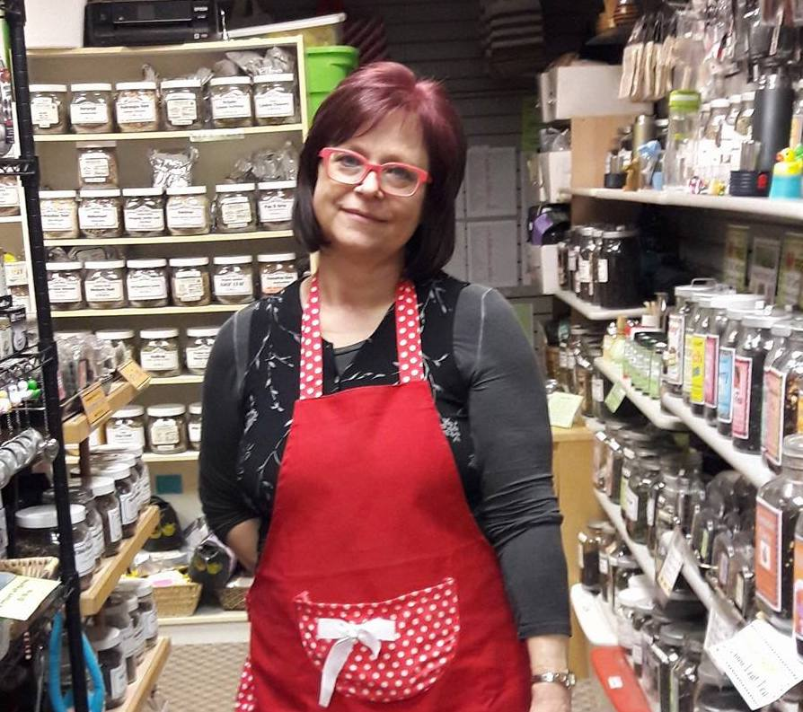

About
Mission
What Do We Offer?
"It is time for good tea!" Our mission is to offer a wide variety of high-quality teas to you, our customers. The quality of your daily beverage will change the quality of your life! We've been in business for many years and we'd like to share our experience with you! Opened in October 2002, Blue Monkey Tea is a specialty tea store located in the Squirrel Hill neighborhood of Pittsburgh, Pennsylvania. Our shop features over 400 varieties of teas, a huge assortment of teapots and tea gadgets, and international sweets. In addition, we offer tea classes and tea tastings every month.
Founder
Margaret Harris
Margaret Harris is the owner of Blue Monkey Tea, tea & gourmet food store in Pittsburgh, Pennsylvania. As one of Pittsburgh's primary tea experts, Margaret Harris is a tea consultant and regularly conducts classes and workshops on tea at a variety of venues, including colleges, clubs, associations, corporations, and at her store. As a native of Poland, where tea is the primary household beverage, her lifelong experience with tea began quite early: she may have had her first "cup of tea" when she was only one day old! Margaret is a graduate of the Warsaw Medical College, which has enabled her to incorporate her medical knowledge into her teachings on the health aspects of teas and tisanes. Margaret is a founding member of the Western Pennsylvania Tea Business Association, as well as several other business and professional groups. Blue Monkey Tea was called Margaret's Fine Imports and before that Wicks and Beans.
History
How We Have Changed Over Time
-
The original store was established in May of 2002. It was
named Wicks & Beans, as the original merchandise consisted
mostly of scented candles and coffee beans. We were located
at 2207 Murray Ave, also in Squirrel Hill (down and across
from Mineo's Pizza.)
-
Despite the small space, we expanded our assortments,
eventually also selling teas and international sweets. Well,
it was getting tight, so we were very happy to move to a much
larger space at 5872 Forbes Ave in July of 2006 and change
the name of the store to Margaret's Fine Imports.
-
Since then we've become mostly a Tea Specialty store with
over 400 varieties of teas in stock, and a huge assortment
of teapots and tea gadgets. We even sell items like tea
cozies and tea wallets!
-
We offer Tea Classes and Tea Tastings every month. We also
carry over 30 types of coffee beans and some neat coffee makers!
-
Apart from that we also attend to the sweet tooth of our
customers by stocking up on international sweets, especially
around Holidays.
-
We offer excellent service and we enjoy interacting with our
customers: repeat and new!
-
On May 9th, 2017 we opened a store in Carnegie and changed
both store names to Blue Monkey Tea. The Carnegie PA location
moved to Pittsburgh in February of 2019.
-
Whose a good Blue Monkey Tea? We are a good Blue Monkey Tea!
And we are here to serve you! We changed our name, in an
attempt, to brand ourselves nationwide.